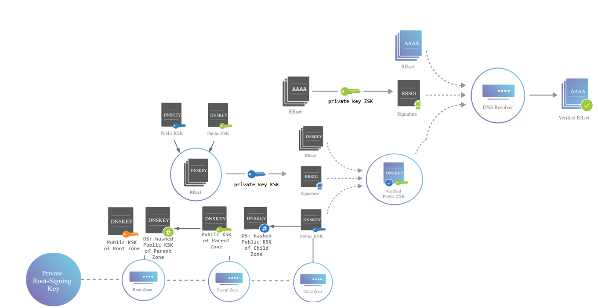

DNSSEC
DNS is been discussed in in the Networking chapter, Reconnaissance chapter, Vulnerability Assessment chapter and Sniffing chapter
DNS Zone
Each DNS zone has a DNS Resource Recourd (zone file) that contain resource records: SOA, NS, A, MX,...
How to make DNS more secure: DNSSEC
DNS Security Extension (DNSSEC) is a security extensions that help DNS to work in a more secure way.
DNSSEC was developed in response to the DNS Cache Poisoning Attack of 2008 but a reliable and trustable DNS can be very useful also for other issues
DNSSEC makes use of Public Key Infrastructure (PKI) “Trust Chain” model, which is a method of using certificates issued by certificate authorities (trusted third parties) in order to confirm the identity of people and organizations.
DNSSEC creates a secure domain name system by adding signed records with private keys to existing DNS records. By checking these signed records with the correspondent public key, it is possible verify that a requested DNS record comes from its authoritative name server and wasn’t altered en-route, opposed to a fake record injected in a man-in-the-middle attack.
Similar to HTTPS, DNSSEC adds a layer of security by enabling authenticated answers on top of an otherwise insecure protocol. Whereas HTTPS encrypts traffic so nobody on the wire can snoop on your Internet activities, DNSSEC merely signs responses so that forgeries are detectable.

{kind=link}
DNSSEC defines four new record types:
Take in mind that in DNSSEC, only signatures are used, and nothing is encrypted
• DNSKEY (DNS Public Key): contain the the public key that is used to validate RRSIG
• RRSIG: Signature that bind RRset with a private key
• DS: Delegation Signer, hash value of the DNSKEY public KSK that is stored in the parent zone
• NSEC: Next Secure, for explicit denial-of-existence of a DNS record
Flag bits used by DNSSEC in query and response message
DNSSEC uses two unused flag bits in the DNS query and answer message header(AD and CD).
To set or unset thse flags in the query see: https://linux.die.net/man/1/dig
◇ DO (DNSSEC OK) bit:
▪ query: if DO bit is set in a query, then this is interpreted as a signal that the response should include DNSSEC data in its response.
*under Additional records
◇ CD (checking disabled) bit:
▪ query: indicates that unauthenticated data is acceptable to the resolver sending the query
◇ AD (Authentic Data) bit:
▪ query: indicate that it understands the AD bit without also requesting DNSSEC data via the DO bit
▪ response: bit set if all RRsets are considered to be authentic.

Flags in query sent(Taken from here):
| DO | CD | AD | Effect |
|---|---|---|---|
| 0 | 0 | 0 | The resolver may or may not perform DNSSEC validation. No DNSSEC RRs are passed back in the response |
| 0 | 0 | 1 | The resolver should perform validation. No DNSSEC RRs are passed back in the response |
| 0 | 1 | 0 | The resolver should not perform DNSSEC validation. No DNSSEC RRs are passed back in the response |
| 0 | 1 | 1 | Mixed signals! The resolvers actions are undefined |
| 1 | 0 | 0 | The resolver should perform validation, and returns DNSSEC RRs in its response |
| 1 | 0 | 1 | The resolver should perform validation, and return DNSSEC RRs in its response |
| 1 | 1 | 0 | The resolver should not perform DNSSEC validation, but it should return DNSSEC RRs in its response |
| 1 | 1 | 1 | Mixed signals! The resolver's actions are undefined |
How to know if a Zone Support DNSSEC?
We have to ask to the domain for DNS public key
dig -t DNSKEY @1.1.1.1 <domain>
dig -t DNSKEY @1.1.1.1 <domain> +trace #if we want to trace all the server queried
dig -t DNSKEY @1.1.1.1 <domain> +trace #if we want to trace all the server queried
In the following interesting article we can find which registrar support DNSSEC and why is still an unpopular protocol
https://blog.apnic.net/2017/12/06/dnssec-deployment-remains-low/
Bibliography
• https://tools.ietf.org/html/rfc3833
• http://www.chrismitchell.net/svidad.pdf
• https://www.ovh.com/blog/an-introduction-to-dnssec/
• https://medium.com/iocscan/how-dnssec-works-9c652257be0
• https://www.cloudflare.com/dns/dnssec/how-dnssec-works/
• https://blog.apnic.net/2017/12/06/dnssec-deployment-remains-low/